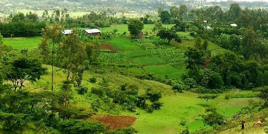
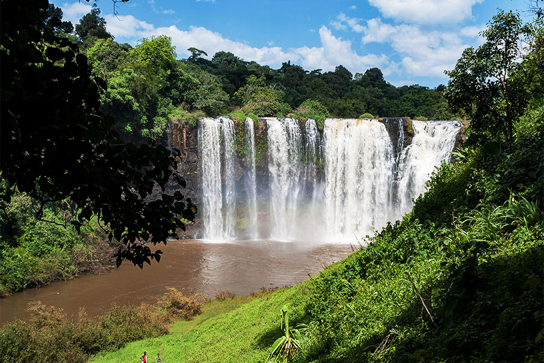

Exploring the Rural Area
I recently visited the beautiful rural area where my grandparents live. It was heartwarming to reconnect with nature and revisit the places that hold so many memories.
The Green Area of "Kanko"
One of the highlights of my trip was the lush, green landscape of Kanko. This place is covered in greenery, and the peaceful environment made it truly memorable.
The Majestic Waterfall at "Fan"
Another unforgettable moment was visiting "Fan," a beautiful waterfall. While I was there, I accidentally dropped my glasses into the water! The view of the waterfall was breathtaking, and the memory of this mishap only adds to its charm.
A Nighttime Encounter
At night, the area was completely dark. My cousin and I spotted a large hyena nearby—my first time seeing one up close! Passing by it quietly was both thrilling and a bit nerve-wracking, but it’s an experience I'll never forget.